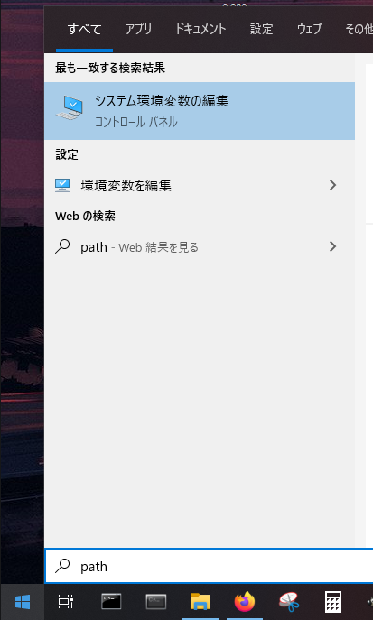
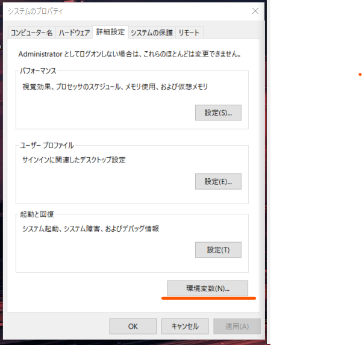
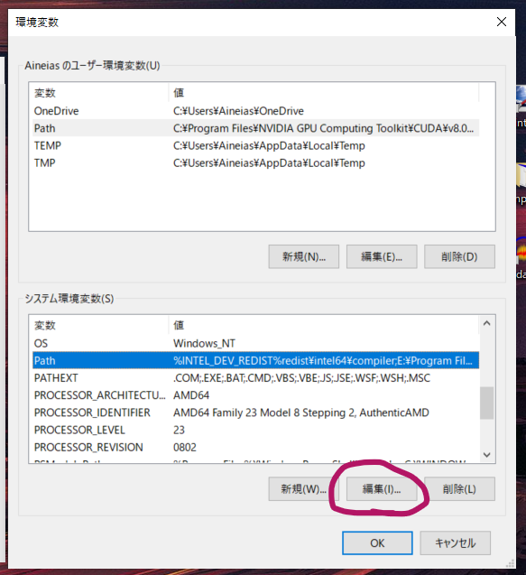
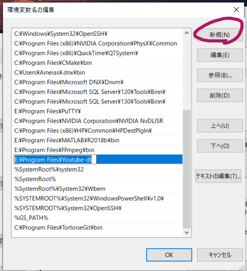
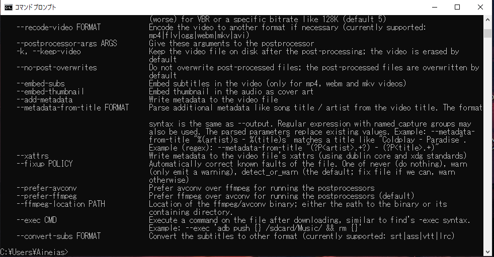
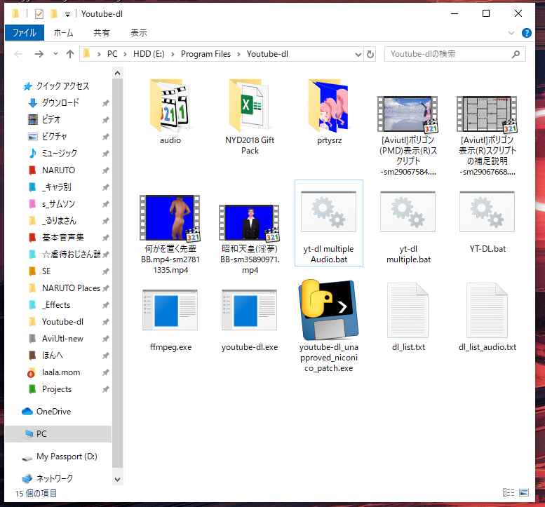
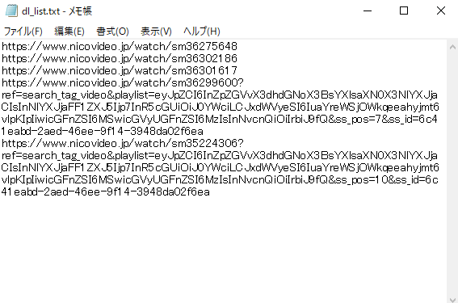
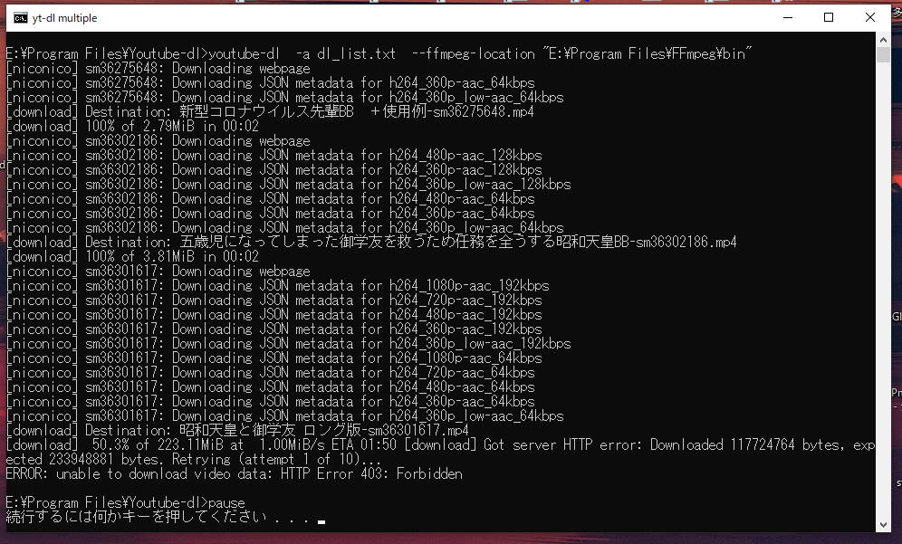

ニコニコでも使えます
動画サイトから動画や音声をコマンドラインでダウンロードできるツール。
導入方法はいろいろある（適当）
配布先にある"Windows exe"をダウンロードし、好きな場所に置く
PATHを追加する。まず、環境変数の設定を開く。
「環境変数」
「システム環境変数」下の「Path」を選択、「編集」
「新規」を選択し、youtube-dl.exeを置いたフォルダをコピペ。
コマンドプロンプトを開き、以下を入力後、ENTER。
youtube-dl -help

ヘルプ画面が出てきたら導入成功。
コマンドラインを開き、以下のように入力すると動画がDLされます
youtube-dl -a [URL]
音声だけ欲しい場合は
youtube-dl -x [URL]
画質とかにこだわりたいならGitHubページを参照。私はよくわからないのでスルーしています。
youtube-dl.exeがあるフォルダでテキストファイルを新規作成し、以下を入力して保存。
youtube-dl -a dl_list.txt
pause
拡張子を.batに変える。
テキストファイルを新規作成し、「dl_list.txt」に名称変更。このファイルにDLする動画のURLを入れていく。
URLを入力し、保存。URLは検索画面のリンクとかでも大丈夫。
.batをダブルクリックするとコマンドプロンプトが立ち上がり、youtube-dl.exeを置いたフォルダに動画がDLされる。
DLに失敗した時はリトライすると成功したりする。長い動画やフラッシュ時代の動画などは無理なことが多い
batファイルとdl_list.txtのショートカットをデスクトップに置いておくと便利です。
GUI版をインストール。
終わり！